Zabbix MFA support¶
We all know that before you can start configuring Zabbix via WebUI you have to sign in. Zabbix has several options to provide better security for user passwords by configuring password policy:
- Requirement for Minimum password length
- Requirements for password to contain an uppercase and a lowercase Latin letter, a digit, a special character
- Requirement to avoid easy-to-guess passwords
To secure sign in process even more you can configure multi factor authentication (MFA). MFA protects Zabbix by using a second source of validation before granting access to its WebUI after a user enters his/her password correctly. Zabbix offers to types of MFA - Time-based one-time password (TOTP) and Duo MFA provider.
Time-based one-time password¶
In the menu select Users section and then Authentication

Now in MFA settings tab select the Enable multi-factor authentication check-box, then select TOTP in Type drop-down list.
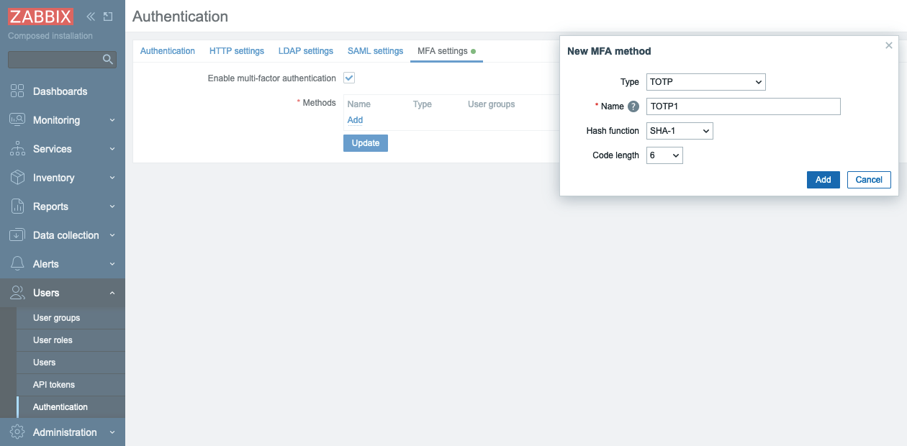
In Hash function drop-down list you can choose SHA-1, SHA-256 or SHA-512, the higher number is the better security.
In Code lentgh you can select how many digits will be generated for you by Authenticator application on your phone.
Click Add and then Update. Now you have TOTP MFA configured and it is the default method of MFA.
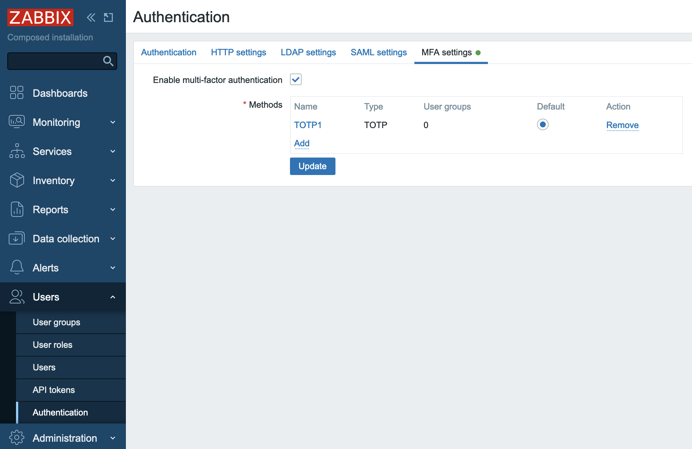
Now you need to tell Zabbix for which User group (or groups) to use MFA. Let's create a User group that would require MFA.
In the menu select Users section and then User groups, then click Create user group button
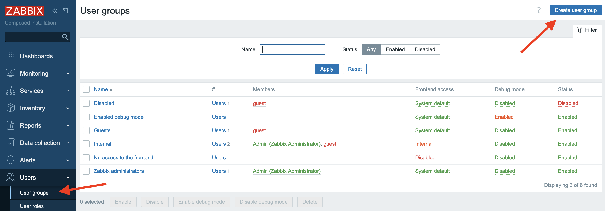
In Group name put "test". Note that Multi-factor authentication field is "Default", as currently we have only one MFA method configured it does not matter whether we select "Default" or "TOTP1" that we created above. You also can disable MFA for all users belonging to this User group. Click Add button to create "test" User group.
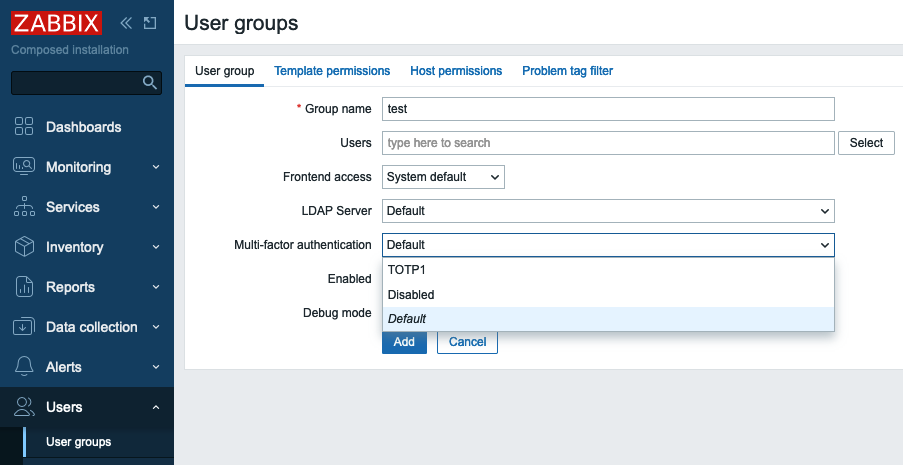
Note
MFA method is defined on per User group basis, i.e. MFA method configured for a User group will be applied to all users belonging to this group.
Let's add a user to this user group. In the menu select Users section and then Users, then click Create user button
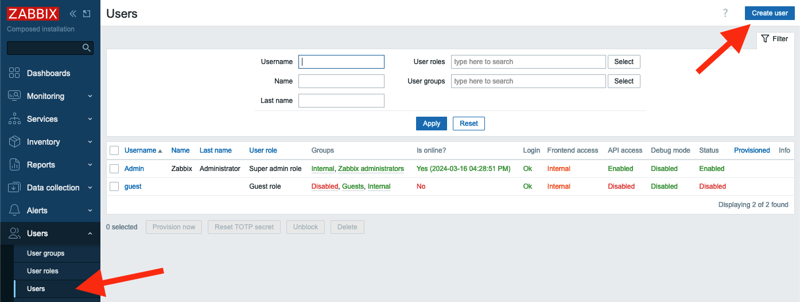
Fill in Username, Password and Password (once again) fields. Make sure you select test user group in Groups field.

Then switch to Permissions tab and select any role.
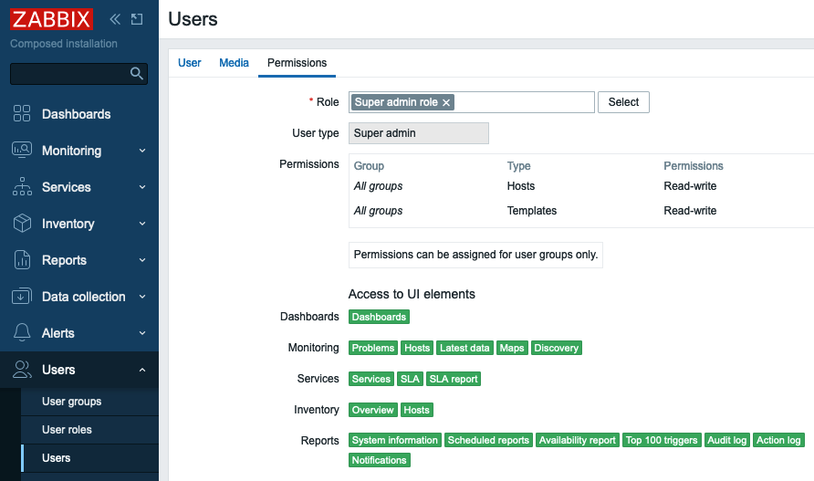
Click Add button to add the user.
Now we can test how TOTP MFA works. Sign out and then try to sign in as a test user you just created. You will be presented with a QR code. That means that the user test has not been enrolled in TOTP MFA yet.
On your phone you need to install either "Microsoft authenticator" or "Google authenticator" application. The procedure of adding new QR code is quite similar, here is how it looks in "Google authenticator". Tap Add a code and then Scan a QR code. You'll be immediately presented with a 6 digit code (remember we selected 6 in Code length when we configured TOTP MFA?)
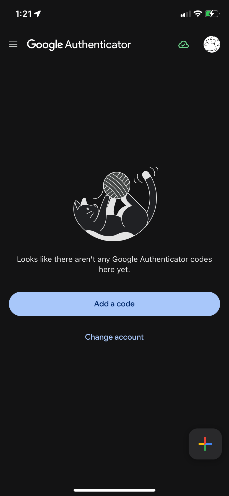 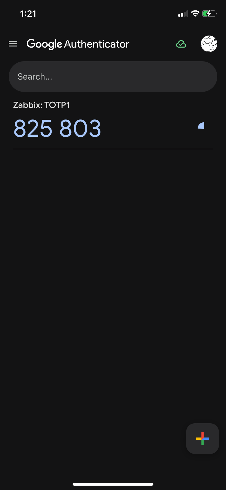
Enter this code into Verification code field of your login screen and click Sign in, if you did everything right you are logged in into Zabbix at this point. At this point the user "test" is considered enrolled into TOTP MFA and Zabbix stores a special code used for furthe authentications in its database. The next time user "test" tries to login into Zabbix there will be only a field to enter verification code
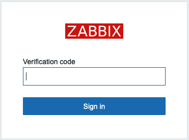
Warning
For TOTP MFA to work your Zabbix server must have correct time. Sometimes it's not the case especially if you are working with containers so pay attention to this.
If a user changes (or loses) his/her phone, then Zabbix administrator should reset his/her enrollment. To do that in the menue select Users then mark a check-box to the left of "test" user and click "Reset TOTP secret" button.
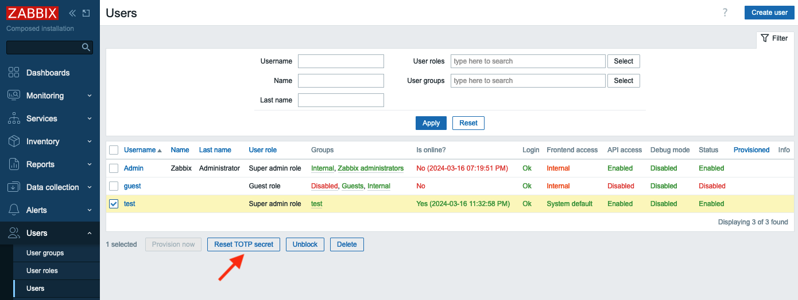
After you reset TOTP secret the "test" user will have to undergo enrollment procedure again.
Duo MFA provider¶
Duo is a very famous security platform that provides a lot of security related features/products. To read more please visit https://duo.com/ . Here we'll talk about Duo only in regards to Zabbix MFA.
Warning
For Duo MFA to work your Zabbix WebUI must be configured to work with HTTPS (valid certificate is not required, self-signed certificate will work).
First of all you need to create an account with Duo (it's free to manage up to 10 users) then login into Duo, you are an admin here. In the menu on the left select Applications and click Protect an Application button.

Then you will see WebSDK in applications list, click on it

Here you'll see all the data needed for Zabbix.

Now let's go to Zabbix. First we need to configure Duo MFA metod. In the menue select Users and click Authentication. Then on MFA settings tab click Add in Methods section.
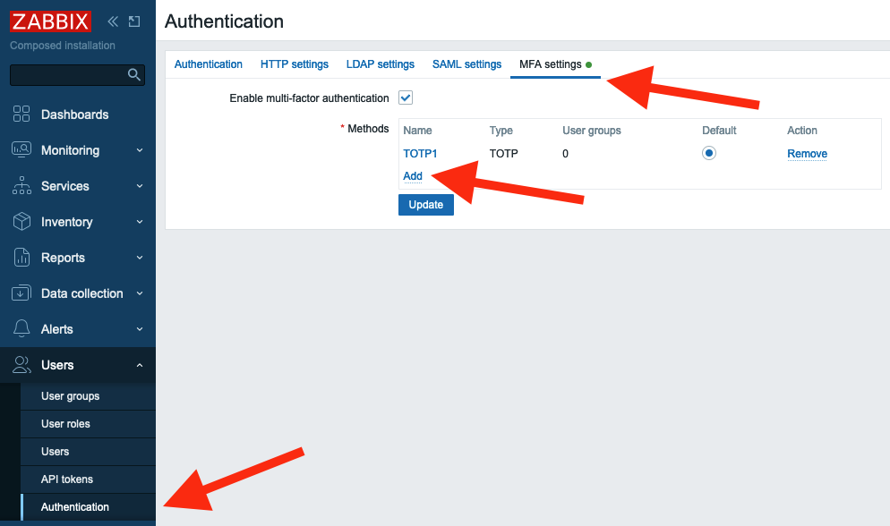
Fill in all the fields with data from Duo Dashboard -> Applications -> Web SDK page (see screenshot above) and click Add, then click Update to update Authentication settings.
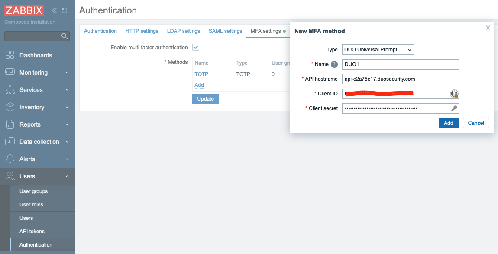
After the MFA method is configured let's switch the "Test" group to use Duo MFA. In the menu select Users and click User groups, then click "test" group. In the field Multi-factor authentication select "DUO1" and click Update.
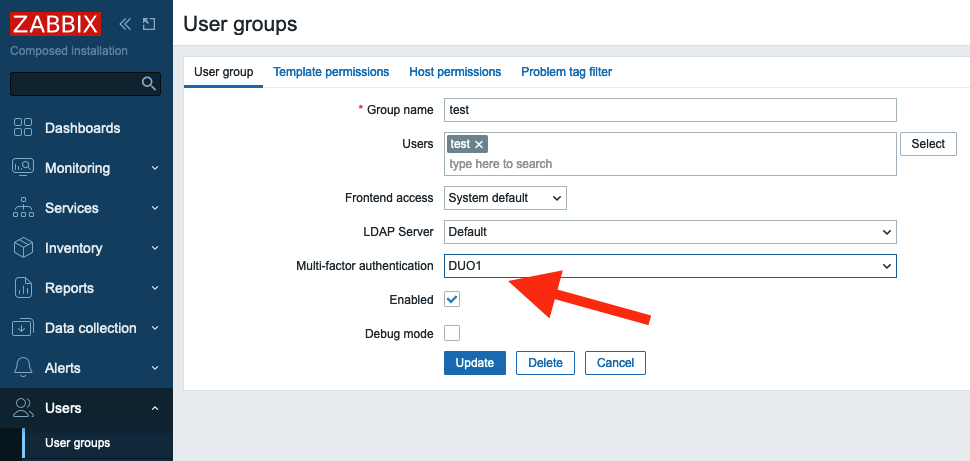
Everything is ready. Let's test it. Sign out of Zabbix and sign back in with "test" user. You should see a welcome screen from Duo. Click several Next buttons.
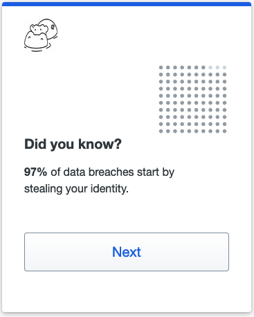 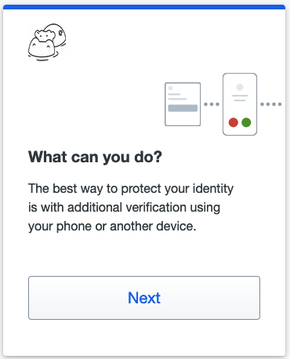
Then you need to select the method of authentication.

It is up to you what to select you can experiment with all these methods. Let's select "Duo Mobile" (you need to install "Duo mobile" application on your device). Click I have a tablet (it's just easier to activate your device this way) and confirm that you installed "Duo mobile" on your phone. At this point you should see a QR code that you need to scan in "Duo mobile" application.
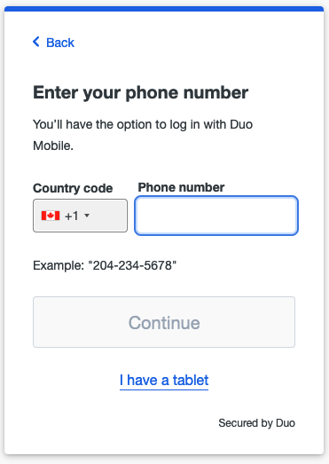 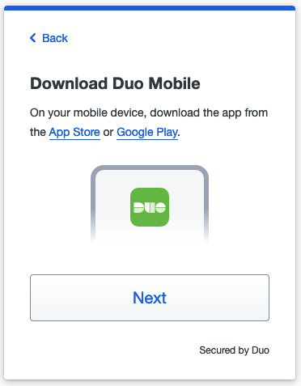
Open "Duo mobile" on your phone. If you did not have this application previously installed (thus no accounts enrolled) you will see couple of welcome screens.
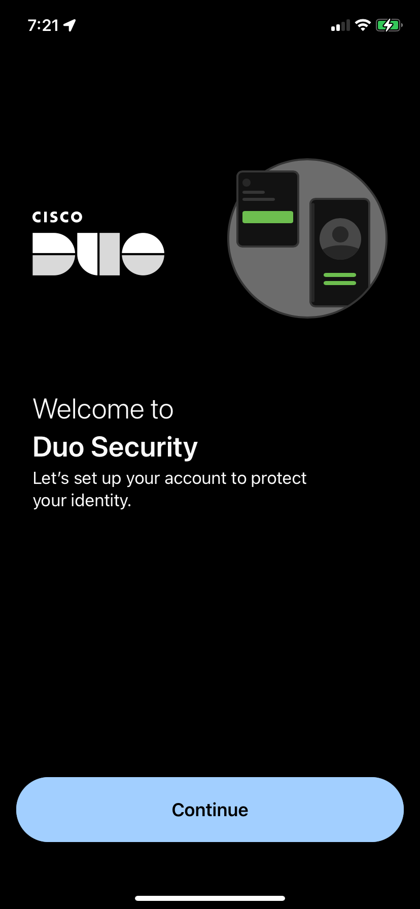 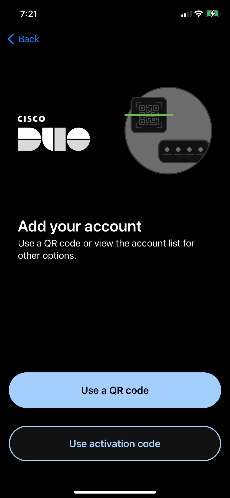
Tap on "Use a QR code" and then scan the code presented by Duo in your Zabbix logiin screen. After you do that you will see that the account is enrolled to your Duo MFA. Enter account name and tap "Done" and you will see the account in the list of all account enrolled into Duo MFA on this device. In Zabbix WebUI you will also see a conirmation, click "Continue".
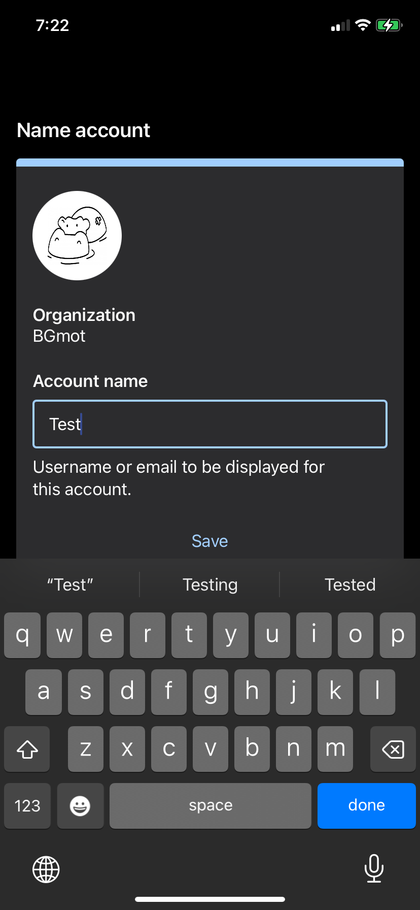

Duo will ask you now whether you want to add another method of authentication, click Skip for now and you'll see a confirmation that set up completed. Click Login with Duo and push notification will be pushed to your device.
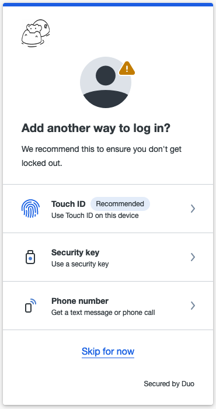
 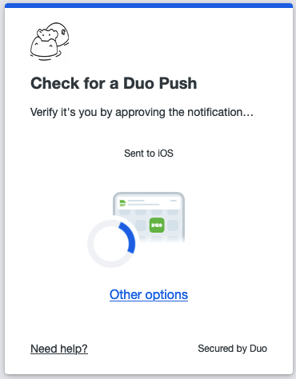
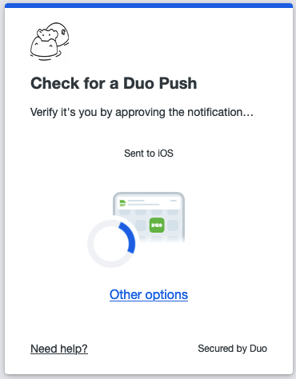
Now just tap on "Approve" on your device and you will be logged in into Zabbix.
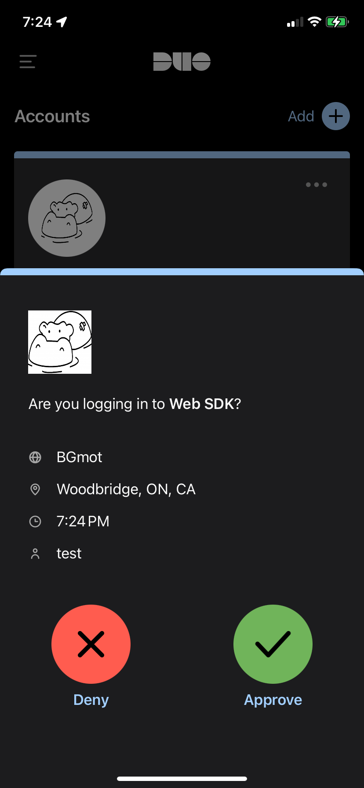
Duo MFA enrollment complete. If you sign out and sign in back then immediately a push notification will be sent to your device and all you need is tap on "Approve". Also you will see the user "test" in Duo where you can delete the user, or deactivate just click on it and experiment.
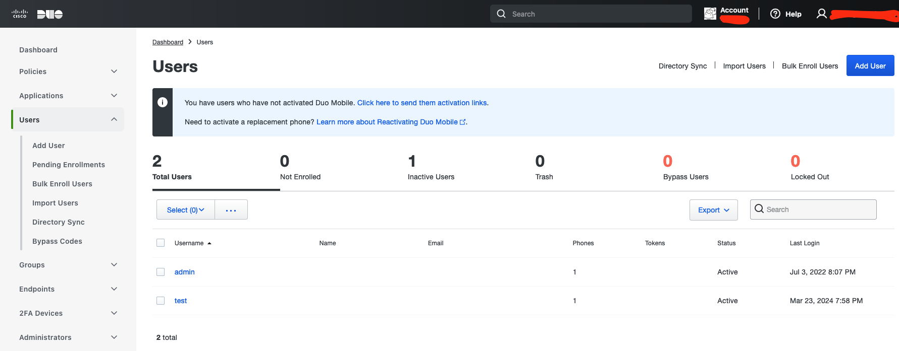